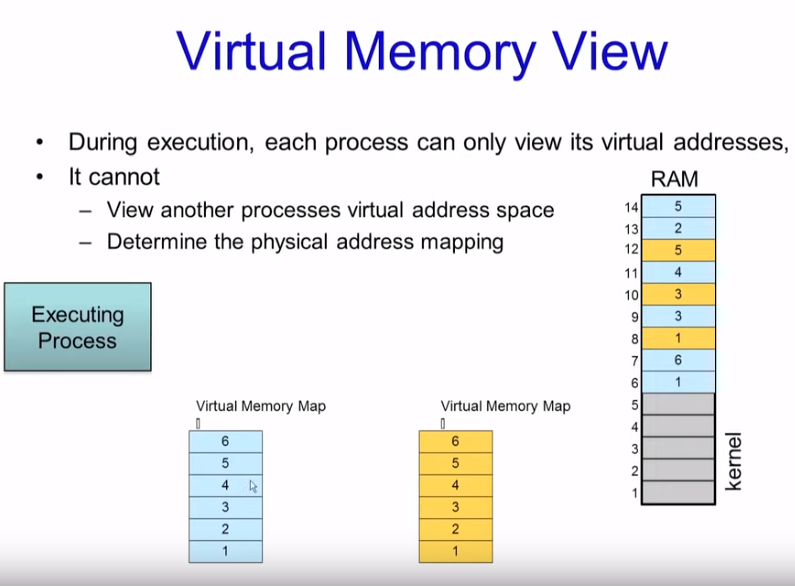
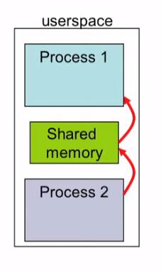
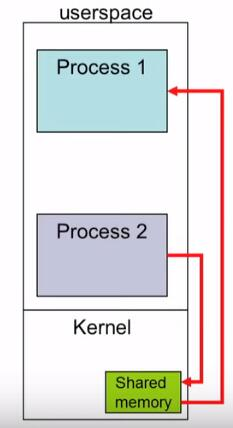
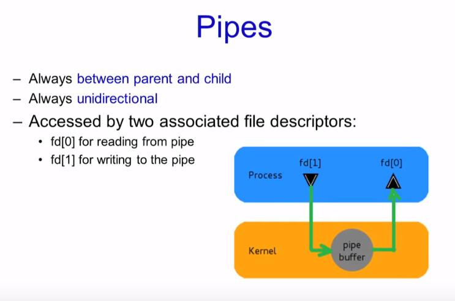
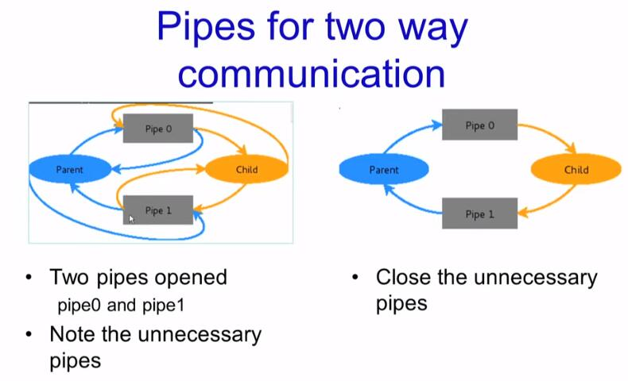

Inter Process Communication
1. 虚存视角
在执行时，每个进程只能看到自己的虚拟地址，它看不到别的进程的虚拟地址，也无法决定实际的物理地址在哪，而虚拟地址到物理内存地址的mapping是由MMU（memory management unit）来完成的。

2. IPC的具体方式
理论来说，好像不同进程之间就是为了让它们区别开来，不要相互之间被影响，但有时候我们又的确想要进程之间相互通信，从而达到某些信息共享、系统模块化等目的。
总的来说，IPC有3种方式：
2.1 内存共享 shared memory

如上图，某个进行可以在内存中开辟一个区域，用于与其他进程之前共享，它们都可以对这片区域进行R/W，这样一来好处就是它们可以像操作每个进程自己的数据区一样快速进行R/W，当然也带来了进程间数据同步的问题。 注意！共享内存开辟在用户空间
Shared Memory in Linux
1 | - int shmget(key, size, flags) |
2.2 消息传递 message passing

消息传递使用的是内核的sys call，通过send或receive来发送和接受消息，这样的好处是不容易出错，但缺点也比较就是需要从用户态到内核态的切换，比较耗时。
消息传递的一个例子就是管道pipe

管道总是在父子进程(fork())之间配合使用,注意，开辟一个pipe后，会有两个文件描述符来读写它，记为int fd[2], fd[0]是读管道，fd[1]是写管道，这个顺序是约定俗称的。
可是有时候为了加快两个进程之前的读写速度，类似“全双工”的概念，会创建两个pipes，子进程只往pipe1写，只从pipe2读，父进程刚好相反，但这个时候会出现“不必要”的fd，要手动关闭掉，如下图：

2.3 信号机制 signals
信号是两进程间异步通信的一种方式，主要通过发送signal和处理signal两部分组成，signal通常来说就是一个小的整数，例如，9-kill，11-segment fault1
2
3
4
5- kill(pid,signal)
函数功能：向pid进程发送一个signal消息
- sighandler_t signal(signum,handler)
函数功能：为处理signal信号注册一个handler